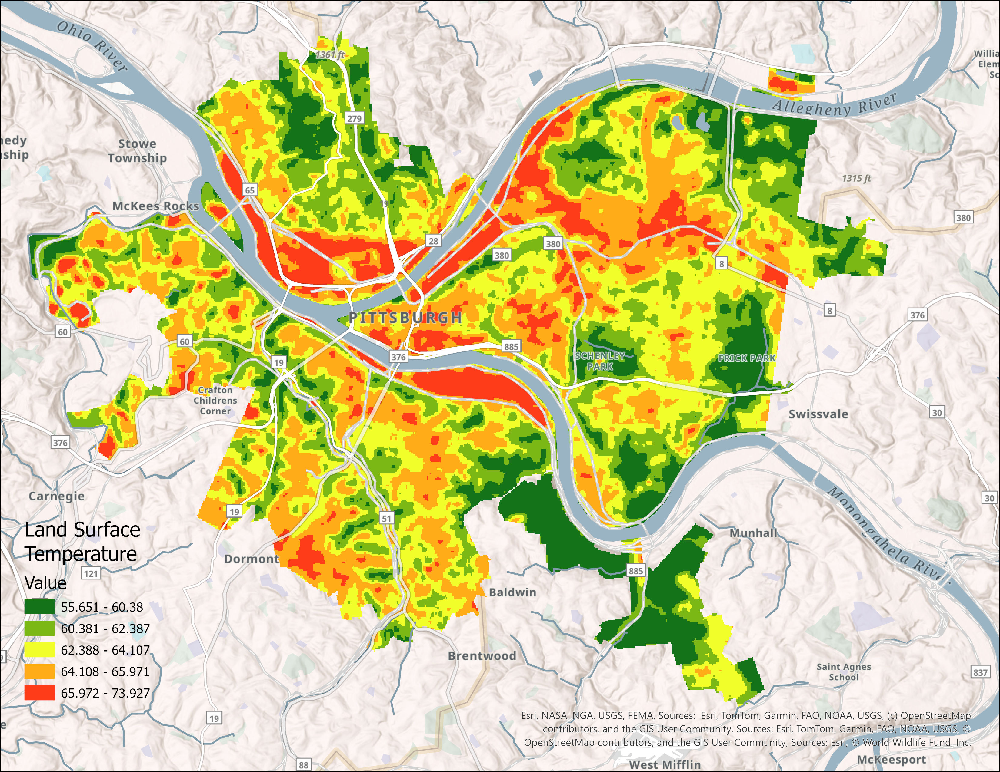

Researchers have found that historically disadvantaged communities, particularly communities of color and low-income populations, tend to live in neighborhoods with higher temperatures relative to adjacent areas within the same city. These intra-urban hotspots are often characterized by landscapes with more heat-absorbing buildings and pavement and fewer cooling green spaces. (Urban Heat Island 101)
The map below represents the LST distribution derived from Landsat imagery, illustrating hotter areas within Pittsburgh.

Explore detailed housing market value information through the interactive map provided below: